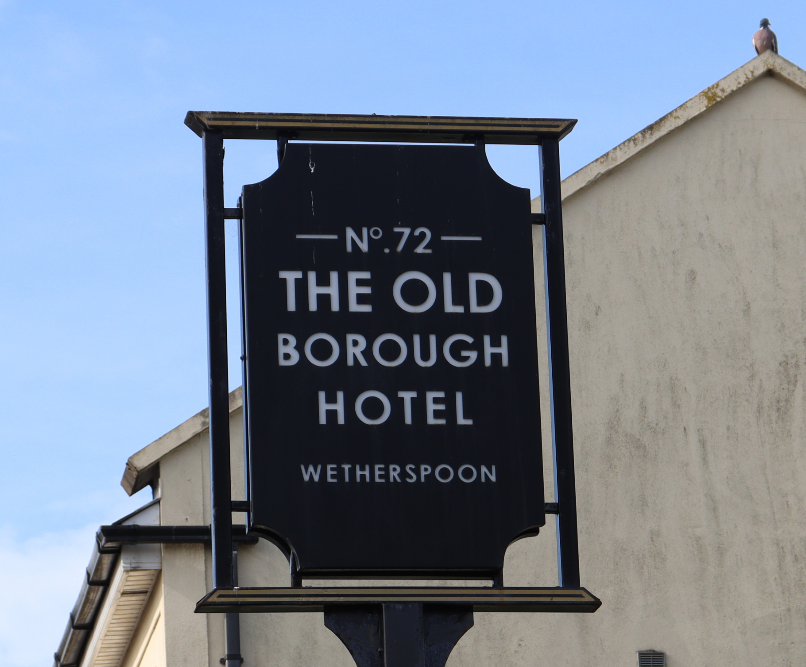

Review
“I booked a 4 day stay on a business trip for myself & a colleague. The hospitality and service we were given by Jason & his team was exceptional. We will definitely be booking to stay here again. The room was clean & very comfortable . The food was good & hot with big portions. The real ale is also very good. 10/10”